在 VS Code 中使用 GitHub
GitHub 是一个基于云的服务，用于存储和共享源代码。将 GitHub 与 Visual Studio Code 结合使用，让你可以直接在编辑器中共享源代码并与他人协作。有许多方式可以与 GitHub 交互，例如通过其网站 https://github.com 或 Git 命令行界面（CLI），但在 VS Code 中，丰富的 GitHub 集成由 GitHub Pull Requests and Issues 扩展提供。
在本主题中，我们将演示如何在不离开 VS Code 的情况下使用你最喜欢的 GitHub 功能。
[!TIP]
如果你刚接触源代码管理，或想进一步了解 VS Code 的基本 Git 支持，可以从源代码管理主题开始。
先决条件
要在 VS Code 中开始使用 GitHub，你需要：
- 计算机上已安装 Git。安装 Git 2.0.0 或更高版本。
- 一个 GitHub 账户。
- 在 VS Code 中安装 GitHub Pull Requests and Issues 扩展。
- 当你提交更改时，Git 会使用你配置的用户名和电子邮件。你可以使用以下命令设置这些值：
git config --global user.name "Your Name" git config --global user.email "your.email@example.com"GitHub Pull Requests 和 Issues 入门
安装 GitHub Pull Requests and Issues 扩展后，你需要登录。
- 选择活动栏中的 GitHub 图标
- 选择登录并按照提示在浏览器中使用 GitHub 进行身份验证

- 你应该会被重定向回 VS Code
如果你没有被重定向回 VS Code，可以手动添加授权令牌：
- 在浏览器窗口中，复制你的授权令牌
- 在 VS Code 中，选择状态栏中的正在登录 github.com...
- 粘贴令牌并按
kbstyle(Enter)完成登录过程设置仓库
克隆仓库
你可以使用命令面板（kb(workbench.action.showCommands)）中的 Git: Clone 命令，或使用源代码管理视图中的克隆仓库按钮（在没有打开文件夹时可用），搜索并从 GitHub 克隆仓库。
从 GitHub 仓库下拉列表中，你可以筛选并选择要克隆到本地的仓库。
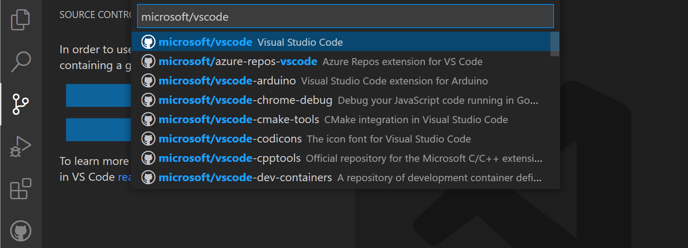
详细了解克隆仓库和使用远程仓库。
对现有仓库进行身份验证
当你执行任何需要 GitHub 身份验证的 Git 操作时（例如推送到你所属的仓库或克隆私有仓库），就会通过 GitHub 进行身份验证。你不需要安装任何特殊扩展来进行身份验证；它内置于 VS Code 中，以便你可以高效地管理仓库。
当你执行需要 GitHub 身份验证的操作时，VS Code 会提示你登录。按照步骤登录 GitHub 并返回 VS Code。
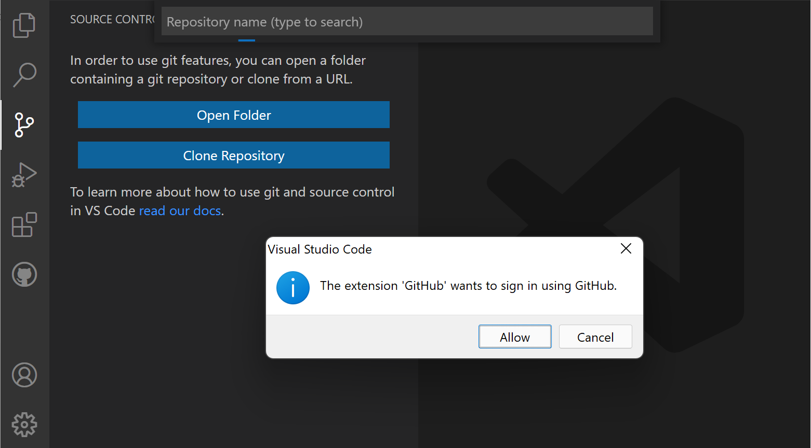
使用个人访问令牌（PAT）登录仅支持 GitHub Enterprise Server。如果你使用 GitHub Enterprise Server 并希望使用 PAT，可以在登录提示中选择取消，直到系统提示你输入 PAT。
请注意，有多种方式可以向 GitHub 进行身份验证，包括使用用户名和密码进行双因素身份验证（2FA）、个人访问令牌或 SSH 密钥。有关每种选项的更多信息和详细信息，请参阅关于 GitHub 身份验证。
[!NOTE]
如果你想在不将内容克隆到本地计算机的情况下处理仓库，可以安装 GitHub Repositories 扩展，直接在 GitHub 上浏览和编辑。详细了解 GitHub Repositories 扩展。
编辑器集成
悬停提示
当你打开一个仓库并且有用户被 @-提及（例如在代码注释中）时，你可以将鼠标悬停在该用户名上，查看包含用户详细信息的 GitHub 风格的悬停提示。
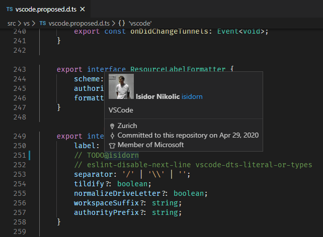
对于 #-提及的议题编号、完整的 GitHub 议题 URL 以及指定仓库的议题，也有类似的悬停提示。
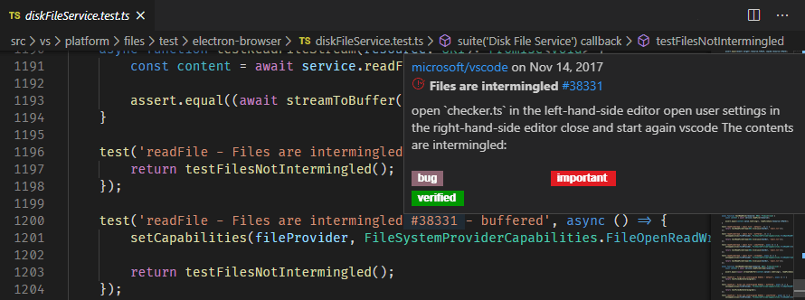
建议
输入 "@" 字符会触发用户建议，输入 "#" 字符会触发议题建议。建议在编辑器和源代码管理提交消息输入框中均可用。
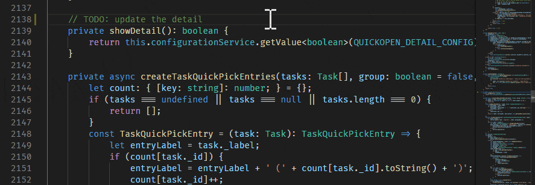
建议中显示的议题可以通过 GitHub Issues: Queries（setting(githubIssues.queries)）设置进行配置。查询使用 GitHub 搜索语法。
你还可以使用 GitHub Issues: Ignore Completion Trigger（setting(githubIssues.ignoreCompletionTrigger)）和 GitHub Issues: Ignore User Completion Trigger（setting(githubIssues.ignoreUserCompletionTrigger)）设置来配置哪些文件类型会显示这些建议。这些设置接受一个语言标识符数组来指定文件类型。
// 不应使用 "#" 字符来触建议题自动完成建议的语言。
"githubIssues.ignoreCompletionTrigger": [
"python"
]Pull Requests
从 Pull Requests 视图中，你可以查看、管理和创建 Pull Request。
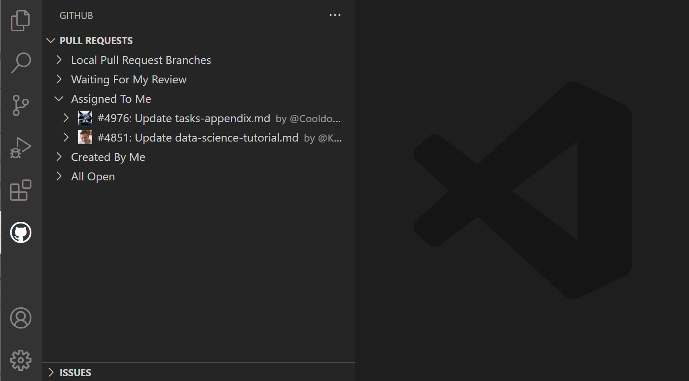
用于显示 Pull Request 的查询可以通过 GitHub Pull Requests: Queries（setting(githubPullRequests.queries)）设置进行配置，并使用 GitHub 搜索语法。
"githubPullRequests.queries": [
{
"label": "Assigned To Me",
"query": "is:open assignee:${user}"
},创建 Pull Request
在将更改提交到 fork 或分支后，你可以使用 GitHub Pull Requests: Create Pull Request 命令或 Pull Requests 视图中的创建 Pull Request 按钮来创建 Pull Request。
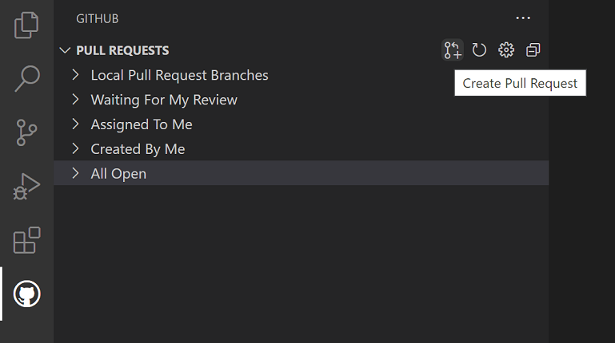
将显示一个新的创建视图，你可以在其中选择 Pull Request 要针对的基础仓库和基础分支，以及填写标题和描述。如果你的仓库有 Pull Request 模板，则该模板将自动用于描述。
使用顶部操作栏中的按钮添加受理人、审阅者、标签和里程碑。
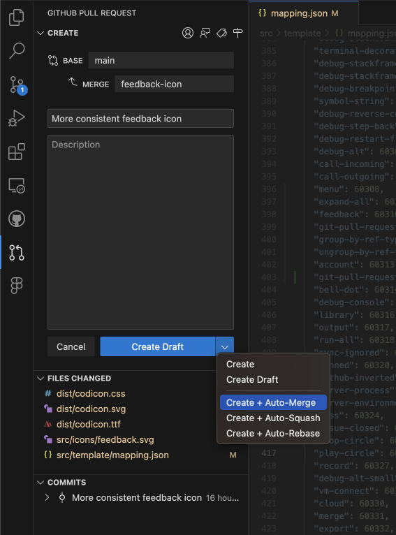
创建按钮菜单允许你选择其他创建选项，例如创建草稿或启用自动合并方法。
选择创建后，如果你尚未将分支推送到 GitHub 远程仓库，扩展会询问你是否要发布该分支，并提供一个下拉列表来选择特定的远程仓库。
创建 Pull Request 视图现在进入审阅模式，你可以在其中查看 PR 的详细信息、添加注释，并在 PR 就绪后合并它。PR 合并后，你可以选择删除远程分支和本地分支。
[!TIP]
使用 AI 根据 PR 中包含的提交来生成 PR 标题和描述。选择 PR 标题字段旁边的 _sparkle_ 图标来生成 PR 标题和描述。

审阅
可以从 Pull Requests 视图中审阅 Pull Request。你可以在 Pull Request 描述中分配审阅者和标签、添加注释、批准、关闭和合并。
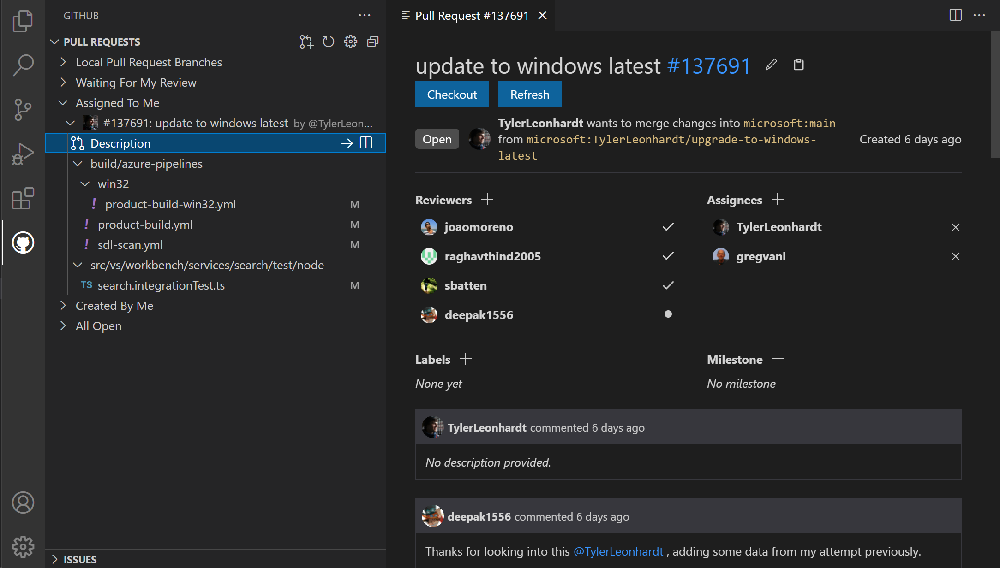
从描述页面，你还可以使用签出按钮轻松地在本地签出 Pull Request。这会将 VS Code 切换为在审阅模式下打开 Pull Request 的 fork 和分支（在状态栏中可见），并添加一个新的 Changes in Pull Request 视图，从中你可以查看当前更改的差异以及所有提交和这些提交中的更改。被注释过的文件会用菱形图标装饰。要查看磁盘上的文件，你可以使用打开文件内联操作。
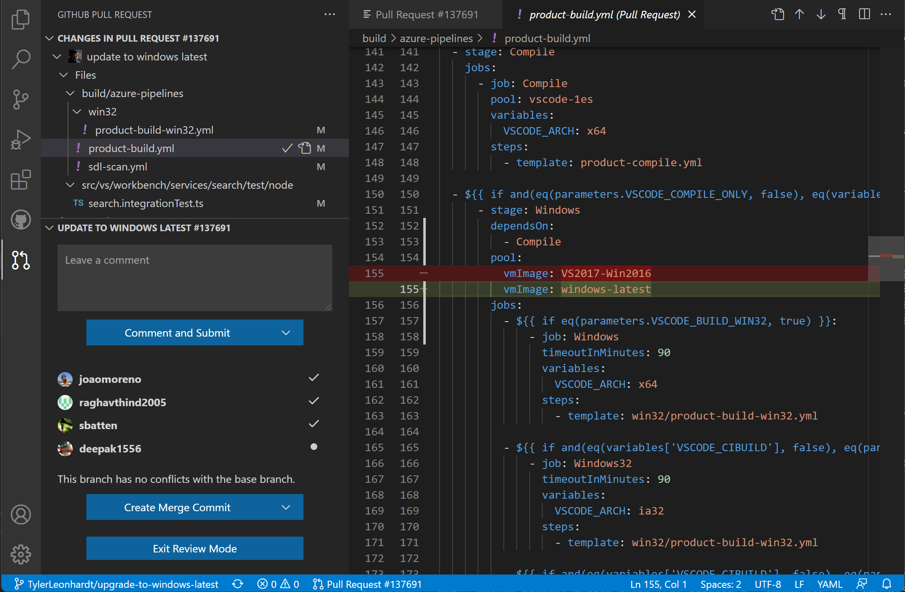
此视图中的差异编辑器使用本地文件，因此文件导航、IntelliSense 和编辑都正常工作。你可以在编辑器中对这些差异添加注释。支持添加单条注释和创建完整的审阅。
完成对 Pull Request 更改的审阅后，你可以合并 PR 或选择退出审阅模式返回之前正在处理的分支。
[!TIP]
你还可以在创建 PR 之前使用 AI 对 PR 进行代码审阅。选择 GitHub Pull Request 视图中的代码审阅按钮。
Issues
创建议题
可以从 Issues 视图中的 + 按钮以及使用 GitHub Issues: Create Issue from Selection 和 GitHub Issues: Create Issue from Clipboard 命令创建议题。还可以使用针对 "TODO" 注释的代码操作为创建议题。创建议题时，你可以采用默认描述，或选择右上角的编辑描述铅笔图标来打开议题正文的编辑器。
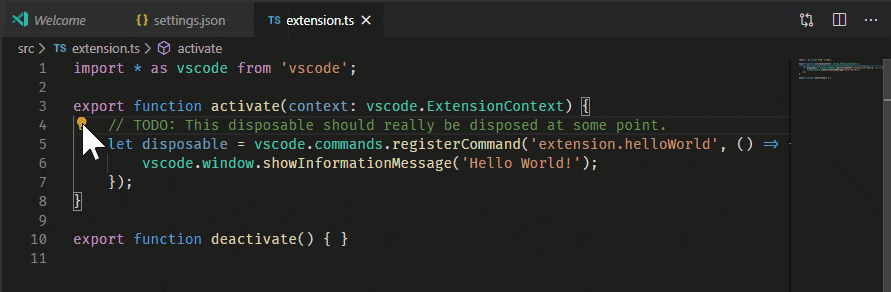
你可以使用 GitHub Issues: Create Issue Triggers（setting(githubIssues.createIssueTriggers)）设置配置代码操作的触发器。
默认的议题触发器有：
"githubIssues.createIssueTriggers": [
"TODO",
"todo",
"BUG",
"FIXME",
"ISSUE",
"HACK"
]处理议题
从 Issues 视图中，你可以查看和处理你的议题。
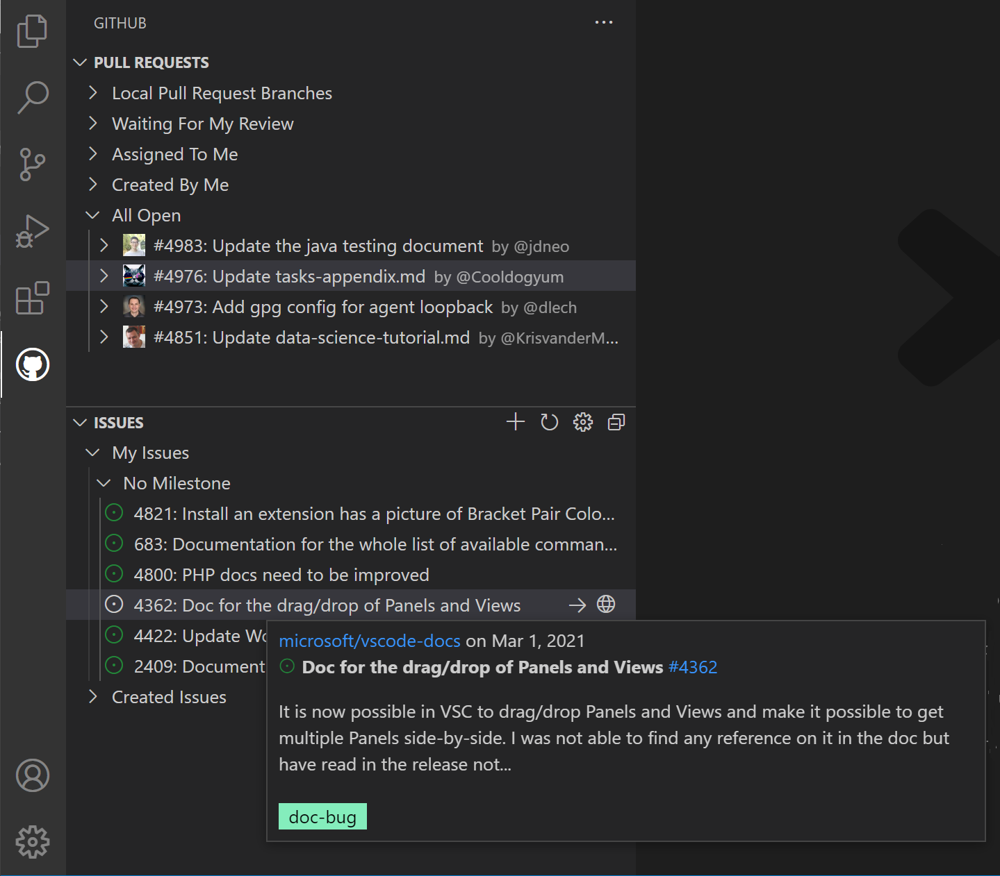
默认情况下，当你开始处理某个议题（开始处理议题上下文菜单项）时，会为你创建一个分支，如下图中状态栏所示。
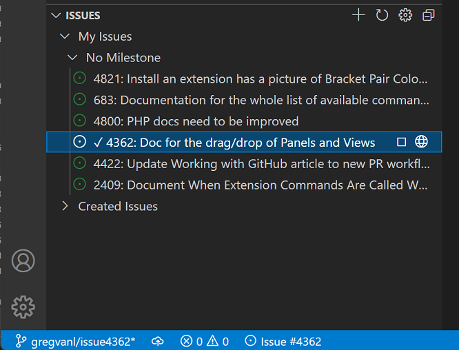
状态栏还会显示活动议题，如果你选择该项，将显示一系列议题操作，例如在 GitHub 网站上打开议题或创建 Pull Request。
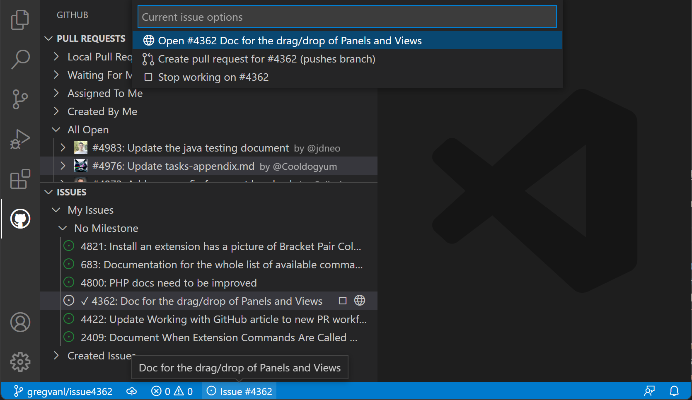
你可以使用 GitHub Issues: Issue Branch Title（setting(githubIssues.issueBranchTitle)）设置配置分支的名称。如果你的工作流不涉及创建分支，或者你希望每次都提示输入分支名称，可以通过关闭 GitHub Issues: Use Branch For Issues（setting(githubIssues.useBranchForIssues)）设置来跳过该步骤。
[!TIP]
详细了解使用分支，以理解分支管理、分支切换以及组织开发工作。
处理完议题并想要提交更改时，源代码管理视图中的提交消息输入框将填充一条消息，该消息可以通过 GitHub Issues: Working Issue Format SCM（setting(githubIssues.workingIssueFormatScm)）进行配置。
GitHub Repositories 扩展
GitHub Repositories 扩展让你可以直接从 Visual Studio Code 中快速浏览、搜索、编辑和提交到任何远程 GitHub 仓库，而无需在本地克隆仓库。在许多场景中，当你只需要查看源代码或对文件或资源进行小更改时，这既快速又方便。
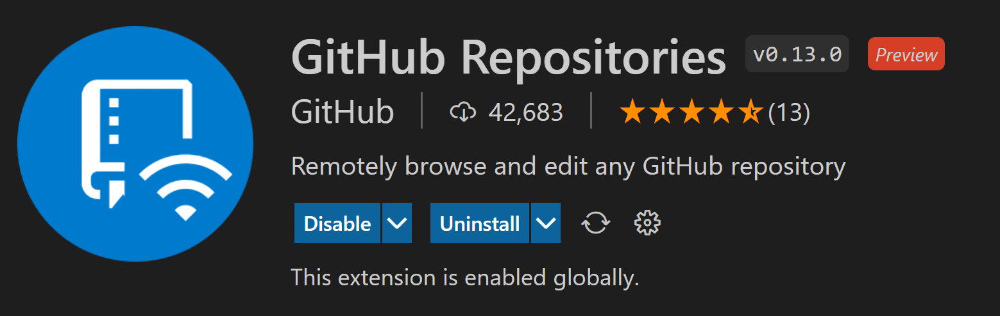
打开仓库
安装 GitHub Repositories 扩展后，你可以使用命令面板（kb(workbench.action.showCommands)）中的 GitHub Repositories: Open Repository... 命令，或点击状态栏左下角的远程指示器来打开仓库。
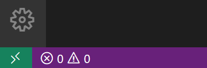
运行打开仓库命令时，你可以选择从 GitHub 打开仓库、从 GitHub 打开 Pull Request，或重新打开之前连接过的仓库。
如果你之前没有在 VS Code 中登录过 GitHub，系统会提示你使用 GitHub 账户进行身份验证。
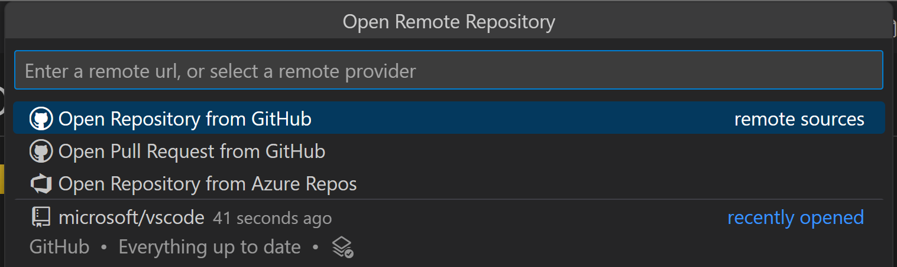
你可以直接提供仓库 URL，或在文本框中输入内容来搜索 GitHub 上你想要的仓库。
选择仓库或 Pull Request 后，VS Code 窗口将重新加载，你将在文件资源管理器中看到仓库内容。然后你可以打开文件（具有完整的语法高亮和括号匹配）、进行编辑和提交更改，就像在本地克隆的仓库上工作一样。
与使用本地仓库的一个区别是，当你使用 GitHub Repository 扩展提交更改时，更改会直接推送到远程仓库，类似于你在 GitHub 网页界面中工作。
GitHub Repositories 扩展的另一个功能是，每次你打开仓库或分支时，都会获得 GitHub 上可用的最新源代码。你不需要像使用本地仓库那样记住拉取来刷新。
GitHub Repositories 扩展支持查看甚至提交 LFS 跟踪的文件，而无需在本地安装 Git LFS（大文件系统）。将你想要用 LFS 跟踪的文件类型添加到 .gitattributes 文件中，然后使用源代码管理视图直接将更改提交到 GitHub。
切换分支
你可以通过点击状态栏中的分支指示器轻松切换分支。GitHub Repositories 扩展的一个出色功能是，你可以在不需要暂存未提交更改的情况下切换分支。扩展会记住你的更改，并在你切换分支时重新应用它们。
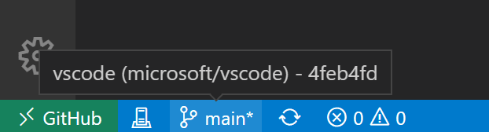
远程资源管理器
你可以使用活动栏上的远程资源管理器快速重新打开远程仓库。此视图显示你之前打开过的仓库和分支。
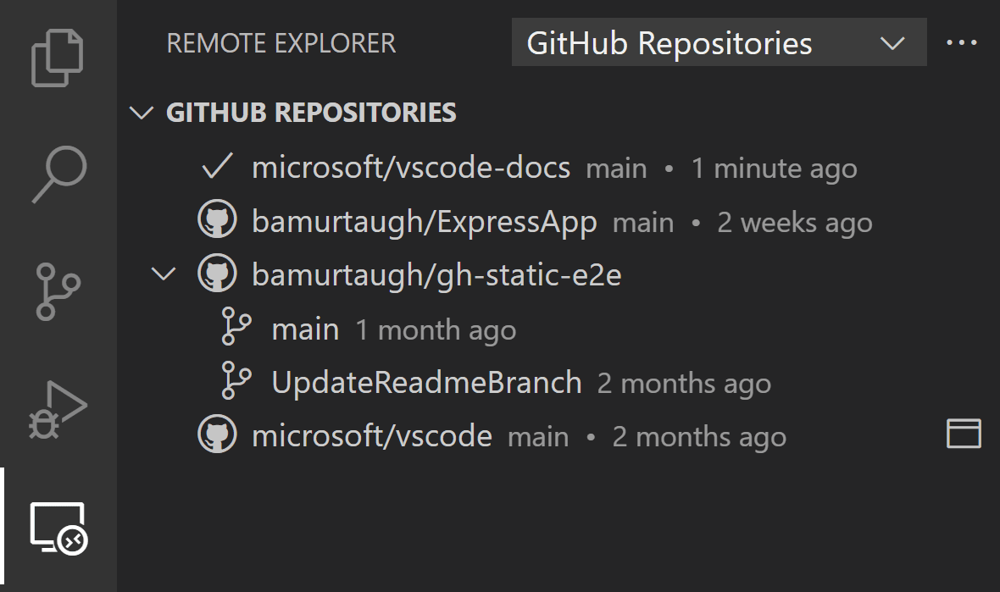
创建 Pull Request
如果你的工作流使用 Pull Request 而不是直接提交到仓库，你可以从源代码管理视图创建新的 PR。系统会提示你提供标题并创建一个新分支。
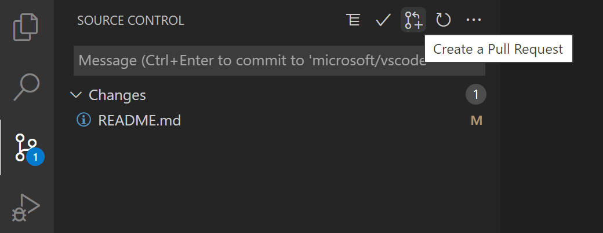
创建 Pull Request 后，你可以使用 GitHub Pull Request and Issues 扩展来审阅、编辑和合并你的 PR，如本主题前面所述。
虚拟文件系统
由于仓库的文件不在你的本地计算机上，GitHub Repositories 扩展会在内存中创建一个虚拟文件系统，以便你可以查看文件内容并进行编辑。使用虚拟文件系统意味着某些假定存在本地文件的操作和扩展未被启用或功能有限。任务、调试和集成终端等功能未被启用，你可以通过远程指示器悬停提示中的功能不可用链接了解虚拟文件系统的支持级别。
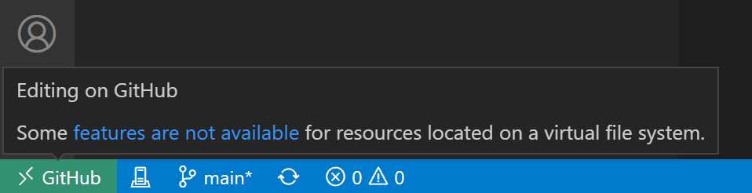
扩展作者可以在虚拟工作区扩展作者指南中详细了解在虚拟文件系统和工作区中运行。
继续工作于
有时你会想切换到在支持本地文件系统以及完整语言和开发工具的开发环境中处理仓库。GitHub Repositories 扩展让你可以轻松地：
- 创建 GitHub codespace（如果你安装了 GitHub Codespaces 扩展）。
- 在本地克隆仓库。
- 将仓库克隆到 Docker 容器中（如果你安装了 Docker 和 Microsoft Container Tools 扩展）。
要切换开发环境，请使用命令面板（kb(workbench.action.showCommands)）中或点击状态栏中的远程指示器可用的 Continue Working On 命令。
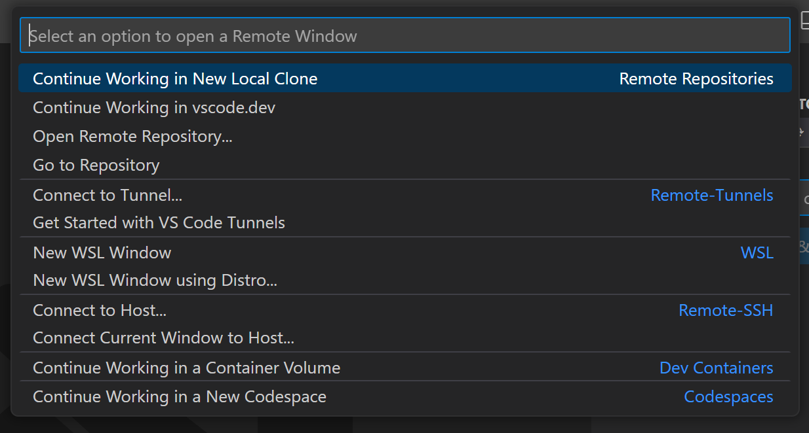
如果你使用的是基于浏览器的编辑器，"Continue Working On" 命令提供在本地打开仓库或在 GitHub Codespaces 中的云托管环境内打开的选项。
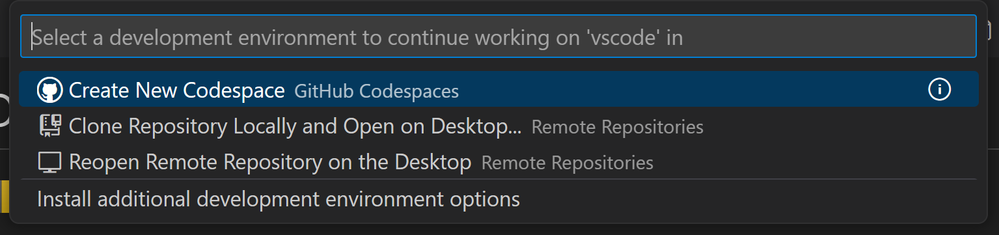
当你第一次在有未提交更改的情况下使用 Continue Working On 时，你可以选择使用云更改将你的编辑带到所选开发环境，该功能会将你的待处理更改存储在与设置同步相同的 VS Code 服务上。
这些更改在应用到目标开发环境后将从我们的服务中删除。如果你选择放弃未提交的更改继续，你可以随时通过配置设置 "workbench.cloudChanges.continueOn": "prompt" 来更改此首选项。
如果你的待处理更改没有自动应用到目标开发环境，你可以使用 Cloud Changes: Show Cloud Changes 命令查看、管理和删除已存储的更改。
后续步骤
- 详细了解 VS Code 中的 AI - 了解 VS Code 中的 AI 功能。